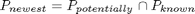
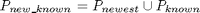

doscan
Description: Work out in virtual world where will be scanned
Contents
Function Call
- Inputs: newQ (6*1 double) joints where we are so as to remove self scanning
- Returns: Null
function doscan(newQ)
Variables
global workspace r Q %if nothing is passed, then we use the actual Q otherwise used passed Q if nargin==0 newQ=Q; end %find out the current end-effector transform tr=fkine(r,newQ); % plot3([tr(1,4) tr(1,4)+tr(1,1)],[tr(2,4) tr(2,4)+tr(2,1)],[tr(3,4) tr(3,4)+tr(3,1)],'color','red') % plot3([tr(1,4) tr(1,4)+tr(1,2)],[tr(2,4) tr(2,4)+tr(2,2)],[tr(3,4) tr(3,4)+tr(3,2)],'color','green') % plot3([tr(1,4) tr(1,4)+tr(1,3)],[tr(2,4) tr(2,4)+tr(2,3)],[tr(3,4) tr(3,4)+tr(3,3)],'color','blue')
Do a scan at a transform in space
%get the projected scan for this direction, it will cover a number of %points if there are any obsticles (read surfaces) within this area then we %need to check which points it will make NOT potentially viewable potentiallyknown=nbv_volume(tr);
Works out how much of potential info is new

workspace.newestknownledge=setdiff(potentiallyknown,workspace.knowncoords,'rows');
Calculates the new state of known info

workspace.knowncoords=union(workspace.knowncoords,workspace.newestknownledge,'rows');